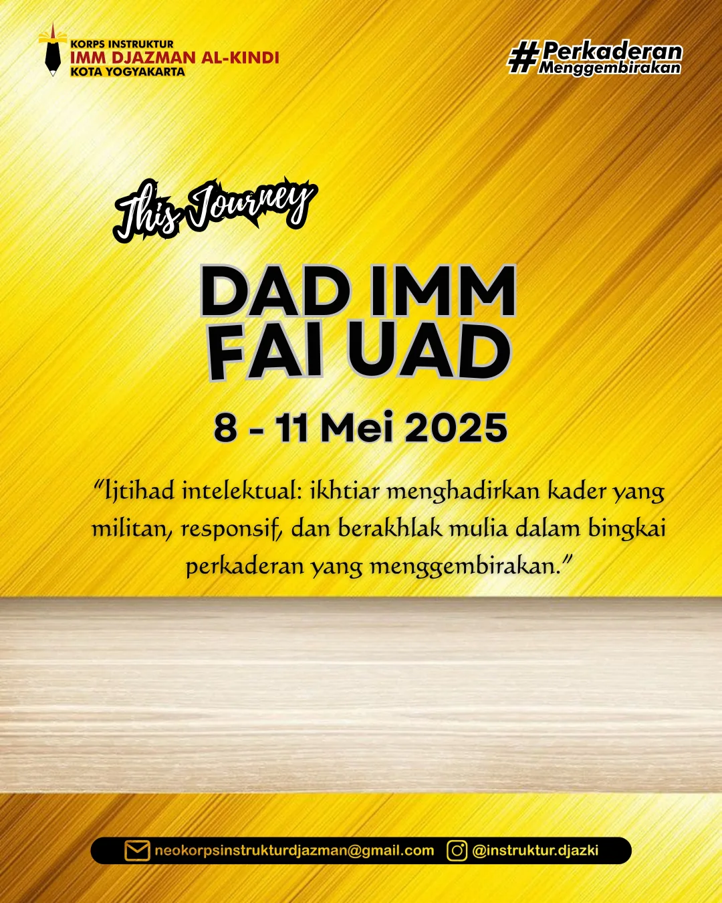

Program Kerja Organisasi
Berikut adalah daftar program kerja Korps Instruktur PC IMM Djazman Al Kindi untuk periode saat ini dan yang akan datang.
Program Kerja Korps Instruktur
Upgrading Korps Instruktur 2025/2026
 Berlangsung Tahunan
Berlangsung Tahunan
Program utama untuk membekali calon instruktur dengan dasar-dasar keinstrukturan dan pemahaman organisasi, membentuk kader yang siap memimpin.
Periode: Mei - Juni 2025 Lihat DetailDiskusi Perkaderan
 Akan Datang Triwulanan
Akan Datang Triwulanan
Forum diskusi rutin untuk mengembangkan dan memperbarui modul-modul pelatihan agar sesuai dengan kebutuhan kader yang dinamis.
Periode: Juli 2025 Lihat DetailDarul Arqam Dasar (DAD) Cabang
DAD IMM FAI UAD
 Berlangsung TahunanDarul Arqam Dasar untuk kader IMM Fakultas Agama Islam Universitas Ahmad Dahlan, sebagai langkah awal perkaderan.
Periode: September 2025 Lihat DetailDAD IMM BPP UAD
 Akan Datang Tahunan
Akan Datang Tahunan
Darul Arqam Dasar untuk kader IMM Fakultas Bisnis, Pendidikan, dan Psikologi Universitas Ahmad Dahlan.
Periode: Oktober 2025 Lihat DetailDAD IMM FAST UAD
 Akan Datang Tahunan
Akan Datang Tahunan
Darul Arqam Dasar untuk kader IMM Fakultas Sains dan Teknologi Terapan Universitas Ahmad Dahlan.
Periode: Oktober 2025 Lihat DetailDAD IMM FTI UAD
 Akan Datang Tahunan
Akan Datang Tahunan
Darul Arqam Dasar untuk kader IMM Fakultas Teknologi Industri Universitas Ahmad Dahlan.
Periode: November 2025 Lihat DetailDAD IMM Farmasi UAD
 Akan Datang Tahunan
Akan Datang Tahunan
Darul Arqam Dasar untuk kader IMM Fakultas Farmasi Universitas Ahmad Dahlan.
Periode: November 2025 Lihat DetailDAD IMM FK UAD
 Akan Datang Tahunan
Akan Datang Tahunan
Darul Arqam Dasar untuk kader IMM Fakultas Kedokteran Universitas Ahmad Dahlan.
Periode: Desember 2025 Lihat DetailDAD IMM Psikologi UAD
 Akan Datang Tahunan
Akan Datang Tahunan
Darul Arqam Dasar untuk kader IMM Fakultas Psikologi Universitas Ahmad Dahlan.
Periode: Desember 2025 Lihat Detail